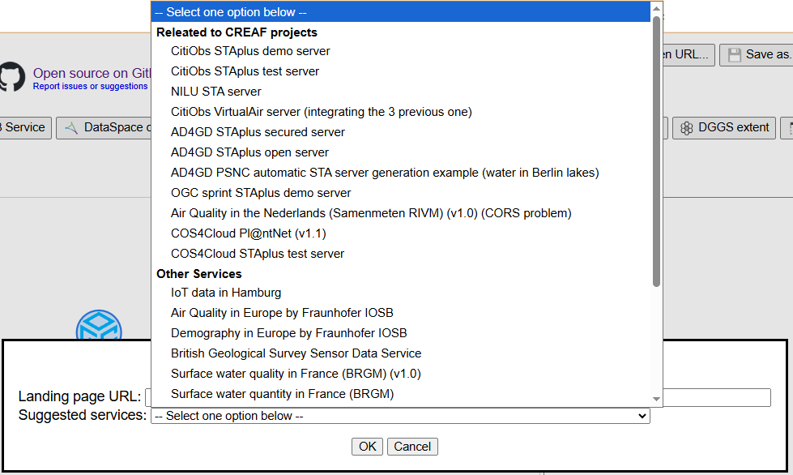
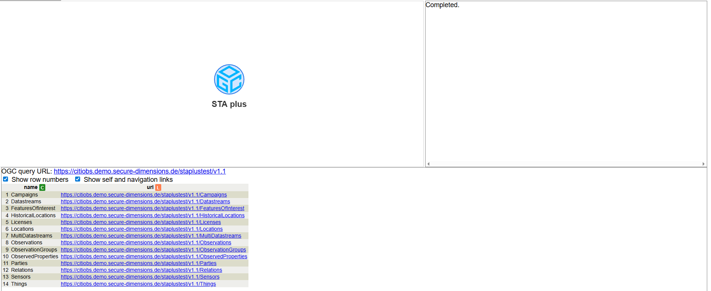

STA Service
STA Service
Reads the STA service API and downloads the data to the browser. This data will be displayed as a table. When an STA service is used, data will be loaded at every step. Using the blue tools will make a new request to the API, while using the grey tools will work with the data already stored in the browser.
Each request to the STA Service API will return only 100 records. To obtain more records, you need to request them explicitly—either by clicking an entity tool or using the Record Range tool.
Some STA services require authorization. This authorization is obtained using the Login tool.

Double-click to the tool to open it. The form below will be displayed
 To access a service, enter the service URL in the Landing Page URL field. TAPIS provides
several examples in the dropdown below (Suggested services); select one and the URL will be added automatically.
To access a service, enter the service URL in the Landing Page URL field. TAPIS provides
several examples in the dropdown below (Suggested services); select one and the URL will be added automatically.

Click the OK button to load the data. If the action succeeds, “Complete” will appear in the clarification zone (the box on the right). If the action fails, the error will appear in this box—for example: HTTP Response Code: 401, indicating that authorization is required.

A successful result will be a table with the list of entities supported by the API.

More information about STA Services: https://www.ogc.org/standards/sensorthings/